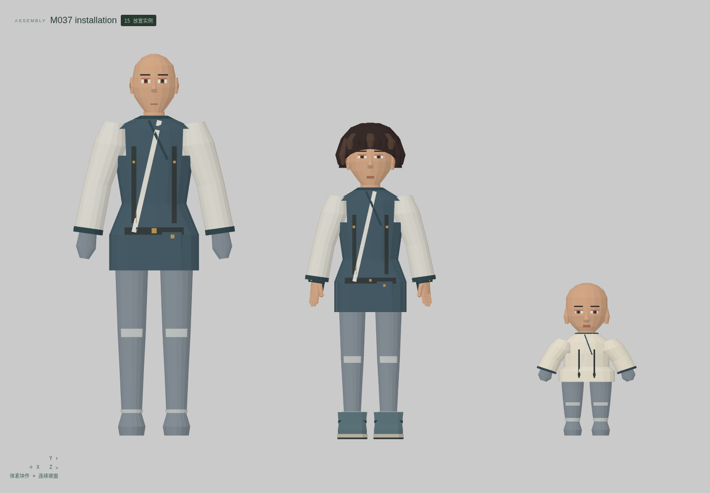
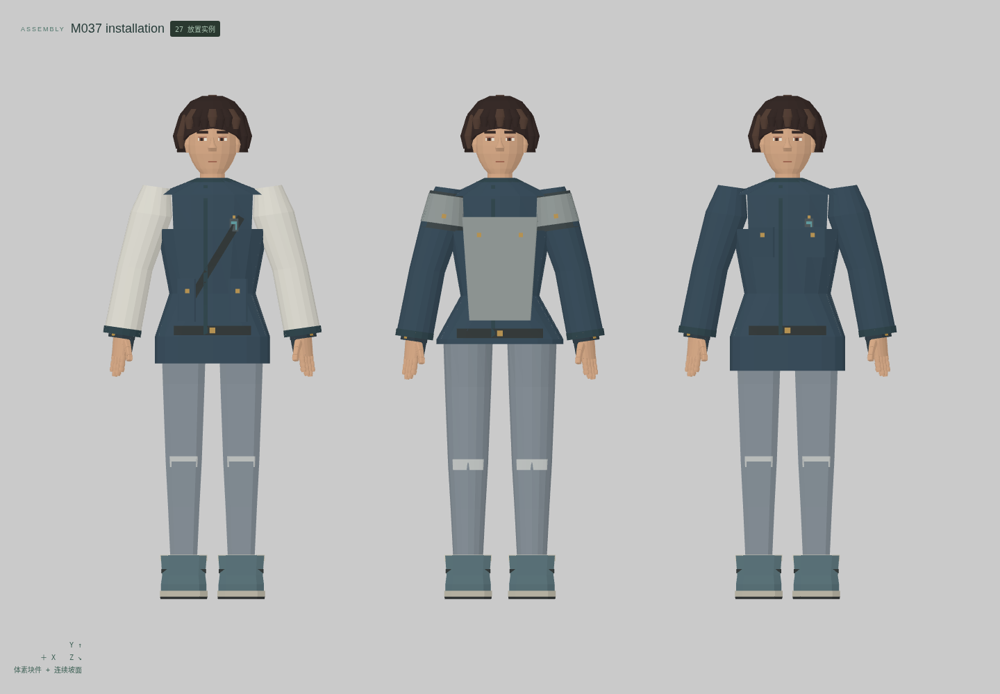
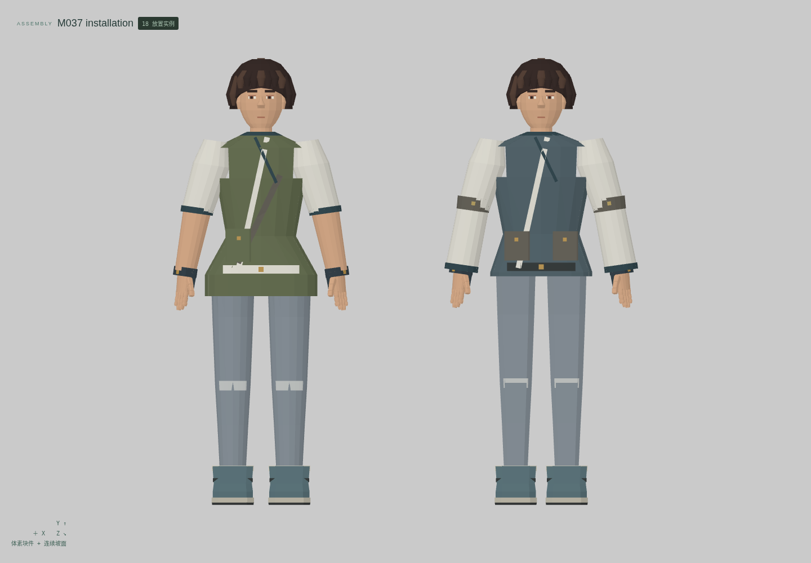
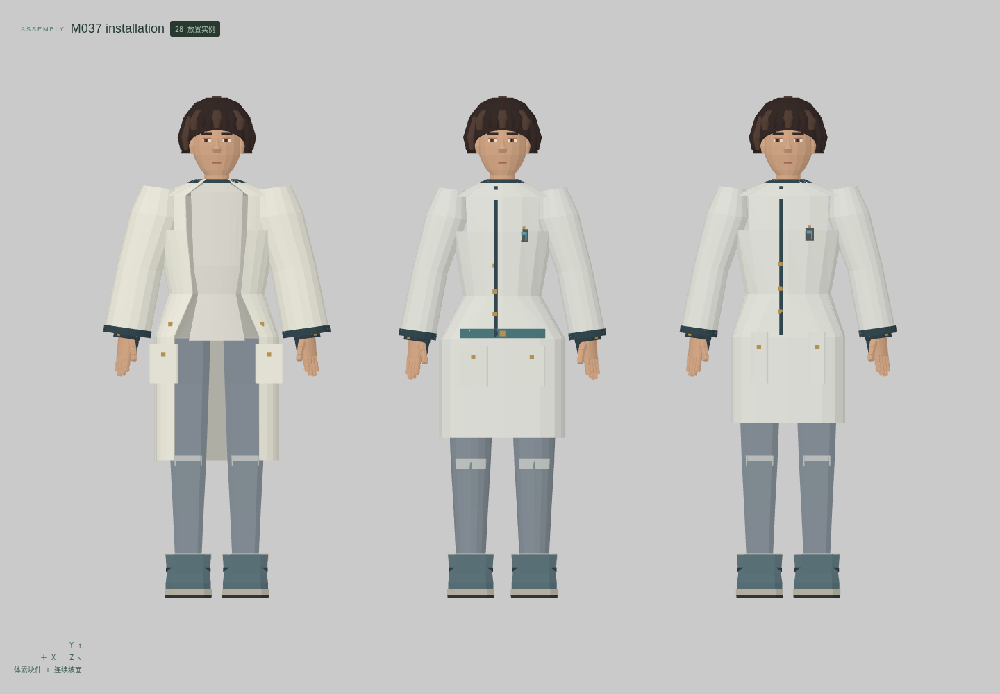
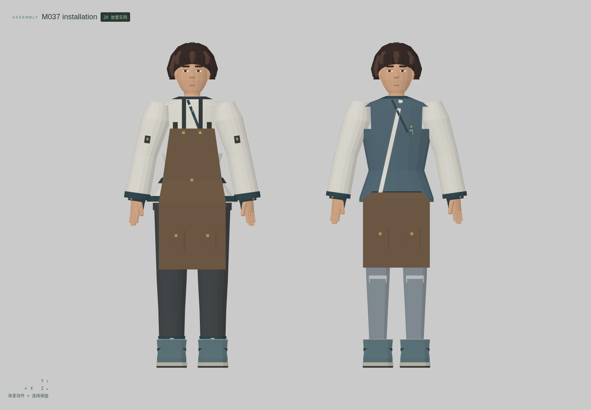
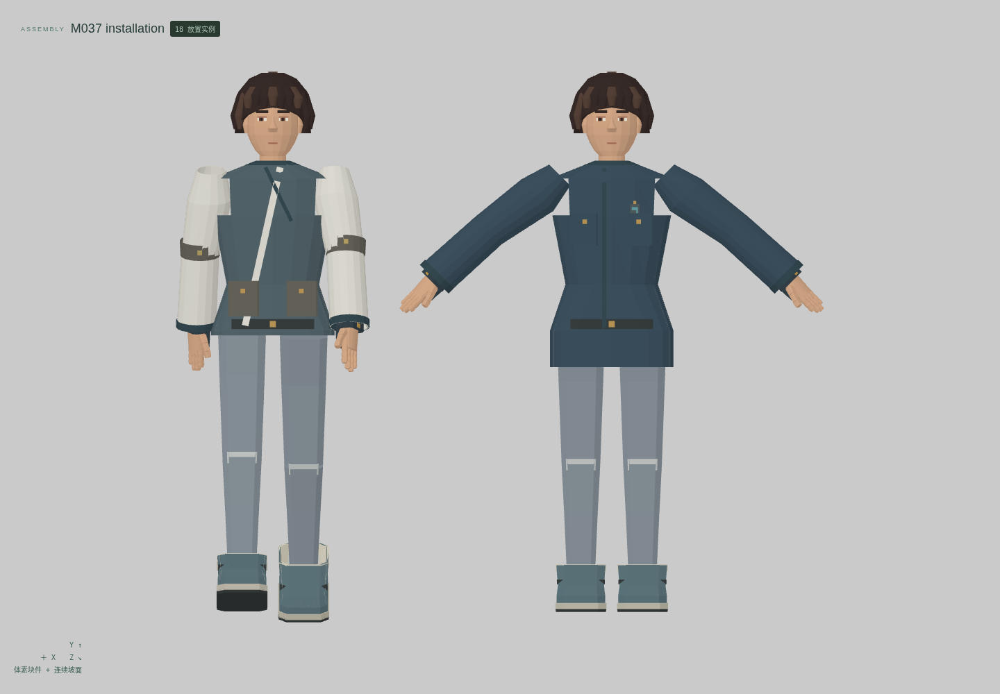
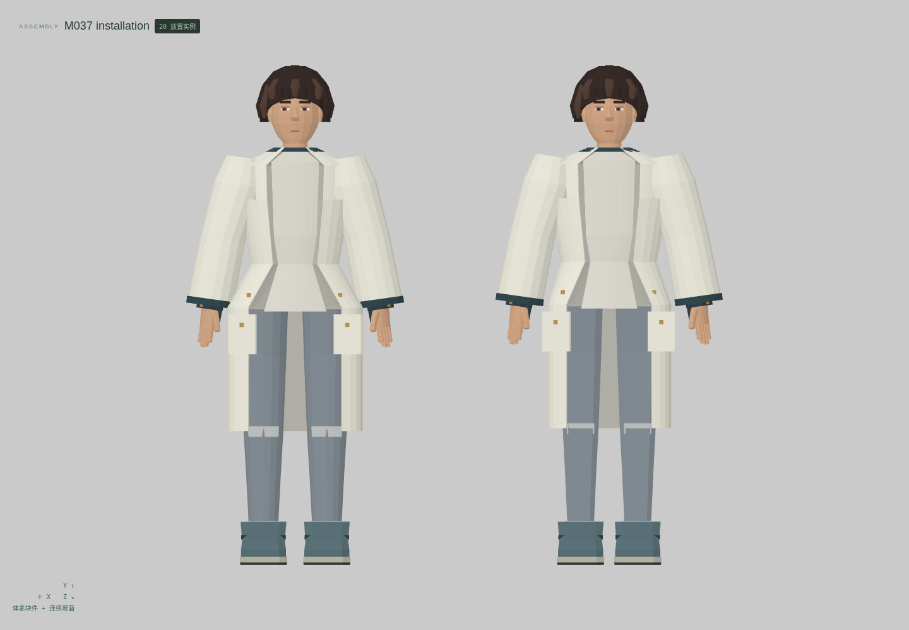

<!doctype html><meta charset="utf-8"><style>*{box-sizing:border-box}body{margin:0;background:#e2e4df;color:#263c34;font:20px system-ui}header,footer{padding:26px 34px}h1{margin:0 0 12px;font-size:32px}main{display:grid;grid-template-columns:1fr 1fr}figure{margin:0;border:1px solid #bec5bd;background:#eceeea}img{display:block;width:100%}figcaption{padding:14px 24px}figure:last-child{grid-column:1/3;margin:0 25%}</style><header><h1>云山 M037 · 年龄衣装、职业制服与围裙</h1>12 个独立母版 · 23 个形态 · 7 组真实编辑器装配 · 正面适配与材质视图<br>最小细节体素；衣面、斜襟、口袋与护板使用连续网格</header><main><figure><figcaption>婴儿包衣 / 学龄与青少年童装</figcaption></figure><figure><figcaption>警务制服 / 守卫防护衣 / 驾驶调度服</figcaption></figure><figure><figcaption>工坊劳动衣 / 田作短袖服</figcaption></figure><figure><figcaption>医生诊疗衣 / 护理工作衣 / 实验外套</figcaption></figure><figure><figcaption>店员围腰 / 独立胸兜围裙</figcaption></figure><figure><figcaption>警服抬臂 / 劳动衣有限行走</figcaption></figure><figure><figcaption>实验外套双体型 · 保留来源的可见内搭</figcaption></figure></main><footer>头部及身体来自另存的既有母版，不重复计数。逐组件刚性关节；只验证命名站姿和有限抬臂/行走。婴儿、青少年保留中性衣套手足端。没有软布、动作片段或原游戏绑定。技术候选，人工美术验收 0。</footer>